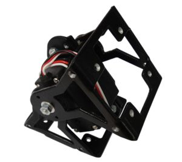
Contenido
[ocultar]Introduction
The MY1 modules consist of three aluminium parts: A, B and C and a Futaba 3003 servo. In addition, five M3 8mm-in-length bolts and nuts are needed.
 Beginning: Module parts + servo + bolts + nuts (Click to enlarge) |
 End: Assembled MY1 module (Click to enlarge) |
Assembling
Step 0: Remove the paint inside the drills (Optional)
The module parts are made of 2mm width aluminium. They have been painted in black. The inner part of the drills is also painted therefore its diameter is a little bit smaller. In order for the 3mm bolts to go smooth through the drills it is necessary to remove this paint using a rounded file.
Do it for all the holes in all the parts: A, B and C
 Removing the paint of the drills of part B(Click to enlarge) |
 Removing the paint of the drills of part A(Click to enlarge) |
Step 1: Join the A and B part
Parts A and B are joined by means of M3 bolts and nuts. They form the body of the module, where the servo will be screwed.
- a) Find the A and B pieces. Place the parts as shown in figure a.
- b) Insert the first bolt with a nut
- c) Align the drills corresponding to parts A and B. Sometimes it is necessary to force a little bit the part B.
- d) Insert the bolt and nut.
 a) Parts A and B ready to be joined (Click to enlarge) |
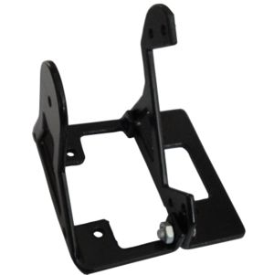 b) Insert a bolt and a nut(Click to enlarge) |
| 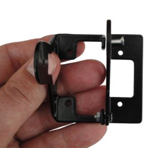 c) Align the drills corresponding to parts B and A (Click to enlarge) |
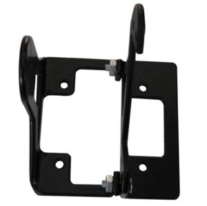 d) Insert the second bolt along with the nut (Click to enlarge) |


After finishing the step 1, the module looks like this:
 Step 1 finished! (Click to enlarge) |
Step 2: Screw the rounded servo horn to part C
- Unscrew the servo horn (figures a and b)
| 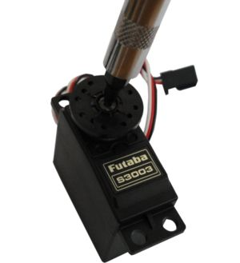 a) Unscrew the servo horn (Click to enlarge) |
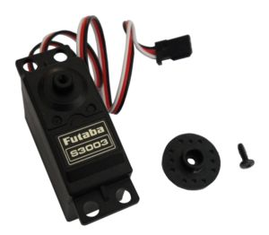 b) Servo without the horn (Click to enlarge) |


- Insert the horn into part C keeping the drills aligned
| 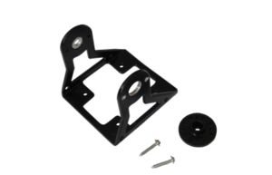 c) Part C, servo horn and bolts (Click to enlarge) |
 d) Servo horn aligned with the part C drills (Click to enlarge) |
 e) Insert the servo horn(Click to enlarge) |
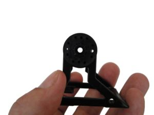 f) Rotate the horn until the drills are aligned (Click to enlarge) |


- Screw the servo horn to part C
| 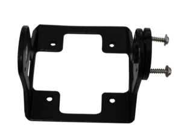 g) Place the bolts (Click to enlarge) |
 h) Screw (Click to enlarge) |

- Trim the bolts
| 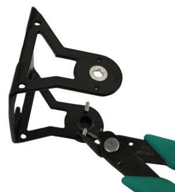 i) Using pliers to trim the bolts (Click to enlarge) |
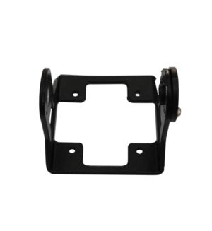 j) Module head finished. View 1 (Click to enlarge) |
 k) Module head finished. View 2 (Click to enlarge) |


- Module status after finishing the step 2
 i) Module status when the step 2 is finished (Click to enlarge) |
Paso 3: Screw the servo to part A
- Place the bolt
 a) Parts needed: Body, servo and bolts (Click to enlarge) |
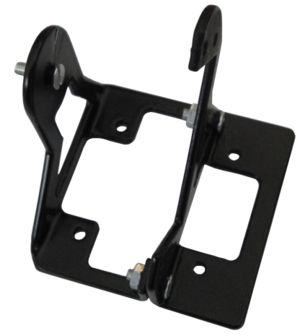 b) Place the bolt in the part A (Click to enlarge) |

- Place the servo and screw it to the part A.
 c) Place the servo in the part A (Click to enlarge) |
 d) Screw the servo (Click to enlarge) |
 e) Screw the servo. Another view (Click to enlarge) |
Step 4: Join the module body and head
- Important! rotate the servo axis clockwise util it reaches the stop
- From this position, place the part c so that the bolts is in the drill, as shown in figure a
- Insert the horn into the servo, as shown in figura b. Make sure the module's head is in the position shown in figure c.
- Una vez unidas las dos piezas, comprobar que el módulo rota correctamente. En un extremo la cabeza debe tocar con el cuerpo. En el otro extremo debe quedar como en la figura c. Si no fuera así, sacar la parte la corona del eje y girarla hasta que se encuentre en la posición correcta. Después volvarla a introducir en el eje.
- Atornillar la corona al servo (figura d)
- Colocar la tuerca del false eje (figura e)
 a) Insert the screw into the part C (Click to enlarge) |
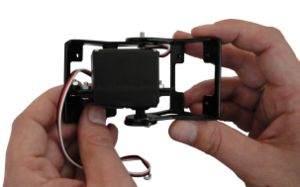 b) Insert the horn into the servo shaft (Click to enlarge) |
 c) Module head and body are joined. When the head is rotated clockwise until it reaches the stop, it should be as shown in the picture (Click to enlarge) |
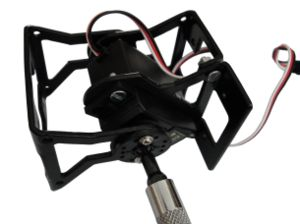 d) Screw the module head to the servo (Click to enlarge) |
 e) Place the nut. The module is finished! (Click to enlarge) |
f) A finished module! (Click to enlarge) |


Pictures
| Photo album |
Links
News
- 19/Feb/2011: This page is started